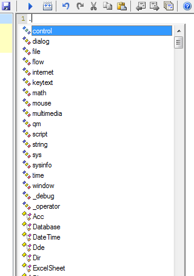

To enter some often used macro commands, you can use dialogs from the code toolbar. If the toolbar is unavailable, click the "Check extensions" button in Options and follow instructions.
However, Quick Macros does not provide dialogs for all commands and functions. You will have to type them directly in the editor. You can find all intrinsic commands and functions through the reference topic. There are several features that can help in finding commands and getting help.
When you type dot (.) somewhere in text (for example, at the beginning of a line), appears list of functions and other identifiers that you can use. Various type kinds (functions, types, constants, variables, etc) have different icons. To insert an identifier, double click it. Or begin to type, and press Tab or Enter to complete.

At the top of the list are categories - collections of related functions. Type . after a category name to view the functions. At the bottom of the list are various libraries. Type . after a library name to view its contents.
Press:
Also there are many other functions (member functions) that are displayed when you type . after a variable of a certain type, for example str, Acc, Database, ARRAY, BSTR, a COM interface. To use such functions, declare a variable of that type, and call functions with that variable. Example:
Ftp f f.Connect("ftp.myserver.com" "user" "passw") f.DirSet("public_html")
In the lists, names of hidden and restricted members are gray.
If you want to hide a user-defined function in the list, place it in a private folder. The list also does not show anything that begins with __ (two underscores). To show hidden items, press Ctrl+Shift+. or use menu Edit -> Members -> Show Hidden.
To show the list when you already partially typed an identifier, choose the Completion command (Ctrl+Space). In most cases it shows only identifiers that begin with the same letter. Ctrl+. and other commands also can be used for this.
When the text insertion point is on an identifier (function, type, etc, except variables), QM status bar shows some info for it. You can Ctrl+click to view it in QM output.

The status bar info for intrinsic and user-defined functions is always available. For other user-defined identifiers, it is available only if the identifier is already declared. That is, if the macro or function with the declaration is already compiled, or the identifier is from a type library or reference file. QM also automatically declares identifiers from type libraries and reference files when typing typelib.identifier. QM also may look in reference files to show info in QM status bar.
To show help for a function or other identifier, type or click it and press F1.